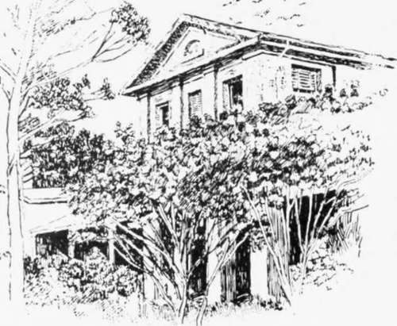

A Ramble Round Old Sydney
Description
This section is from the book "Stories Of Old Sydney", by Charles H. Bertie.
A Ramble Round Old Sydney
IT has been objected that the adjective " old " does not, cannot, apply to Sydney. " Your city is but a century and a quarter old, and as cities go, it is but an infant." our critics have urged. We cannot boast of history " twelve coffins deep," but we can remind our critics that time and age are comparative things. This morning certain insects were born and to-night they are dying of old age. One man has lived a year of pleasure, another one of pain; 'twould be idle to say they were of the same duration. And, above all do we not read " a thousand years in His sight are but as a day?" Charles Kingsley, in one of his charming essays, says that there was no need for him to travel across to Switzerland to see the Alps, or to journey to India to see nature " red in tooth and claw," for on his own moorland, when his eyes were rid of the " tyrannous phantom of size." he could see Alps in the hills, and in the grass at his feet he could find as great a warfare as ever raged in Indian jungle. In like manner we must apply a comparative test for age as well as size, and in this test we shall find Sydney an old city, in fact, so old that Paris and Berlin must need hide their diminished heads, and even London must defend herself with obscurity. For how many cities in the world can claim that the national history begins with them? This is the proud boast of Sydney, for the shore of Sydney Cove was the cradle of the Australian race, and her old buildings and streets are invested with a dignity beyond that of mere age.
With this by way of preface and preparation, we shall begin our ramble round the city.
The old building shown in the first illustration to this chapter stood, until a few months ago, in Cumberland Street. It was the birthplace and boyhood home of David Scott Mitchell, the donor of the magnificent [Mitchell Library. In the early thirties of last century Bishop Broughton-Australia's first and only bishop- was the tenant. Surely such connections should merit some consideration-but-a timber yard is now adorning the site.
The three pictures following are all views in Cumberland Street, the main street of that intensely interesting portion of Sydney known as " The Rocks," where we find the most instructive relics of a bygone Sydney. It is somewhat difficult to realize that the dilapidated houses in the second drawing were, in the forties, residences of men of fashion. The stream of life that flowed down this portion of Cumberland Street sixty years ago carried some men who left marks in our history. Somewhat later we have a picture of a small boy playing in the vicinity, for he lived just north of the buildings, and the footsteps of this boy led him in after years to the chair of the first Prime Minister of Federated Australia and to a seat on the Federal High Court Bench as Sir Edmund Barton. In the picture " In Cumberland Street, north of the Argyle
Cumberland Place, Cumberland Street.
Old Houses in Cumberland Street North.
Cut," we have in the centre cottage a type of the building adopted in the very early days of the city. It has wide eaves and is built of plastered brick. When the house was erected the street was not formed; in consequence, the tenant now steps down into his abode.
Not far away our artist has found an old building known in the days of its grandeur as Cumberland House. I stood one day in front of the house with an old gentleman who had resided therein for oxer 40 years, and he brought before me forcibly what a connecting link this old mansion is between the convict regime and our day. Soon after becoming the tenant he noticed a well-dressed, prosperous-looking man standing in the yard and gazing at the building. My friend spoke to the visitor and asked if he knew the house. " Yes," was the reply; " I have good cause to remember it. I worked at its erection, and was flogged here one day." Cumberland
In Cumberland Street, north of the Ar gyle Cut.

Cumberland House, Cumberland Street.
House was built in the " twenties " of the nineteenth century, and had as tenant in 1833 Captain Joseph Moore, who was, I believe, also the owner. Captain Moore was the founder of the family so intimately associated with Miller's Point and the owners of Moore's Wharf. A later tenant of the building was Mr. Francis Mitchell, a partner in Mitchell and Co., one of the prominent early mercantile firms of Sydney.
Our next pictures carry us out on to the neck of land known as Miller's Point. The first is a view of the locality of Merri-man and Bettington Streets, as it appeared in 1906. This is close to the site of the windmills which are referred to in another chapter. In the same year Mr. Smith made the drawing of the wharves on Miller's and Dawes Points. A visitor of to-day would find some difficulty in identifying this picture. So rapidly is old Sydney disappearing before the army of improvers that the view has completely changed. Gone are Towns' and Moore's wharves, links with the whaling days; a broad street runs where the old stores once held goods gathered from "China to Peru," and the military barracks, in the background of the picture, also have been swept away.
" Suppose you were to give me your idea of a monument to a Lord Mayor of London; or a tomb for a sheriff; or your notion of a cow-house to be erected in a nobleman's park. Do you know now," said Mr. Pecksniff, folding his hands, and looking at his young relation with an air of pensive interest, " that I should very much like to see your notion of a cowhouse?" Something of the feeling of surprise, experienced by Martin Chuzzlewit at this artistic indifference to the object upon which his art was to be exercised, comes over me when I view another drawing presented for my pen by the artist,

On Mi'lier's Point-Bettington Street in 1906.
Jlfiller's and Dawes Points in 1906.
Continue to:
- prev: The Windmills Of Old Sydney. Part 3
- Table of Contents
- next: A Ramble Round Old Sydney. Continued